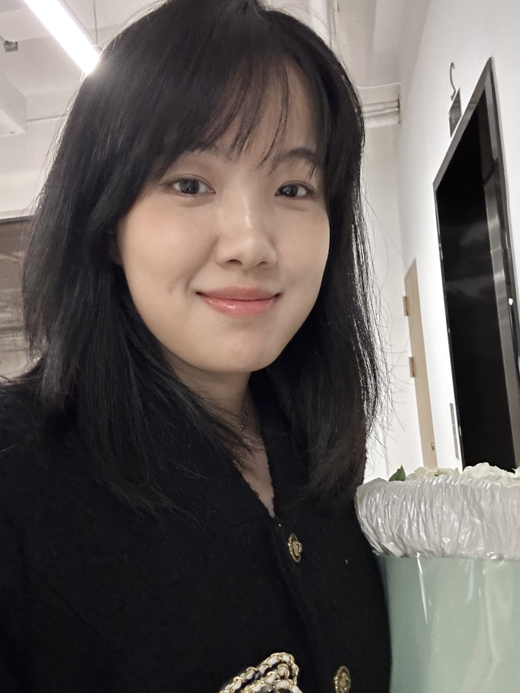
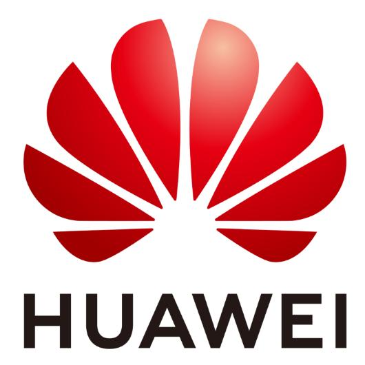
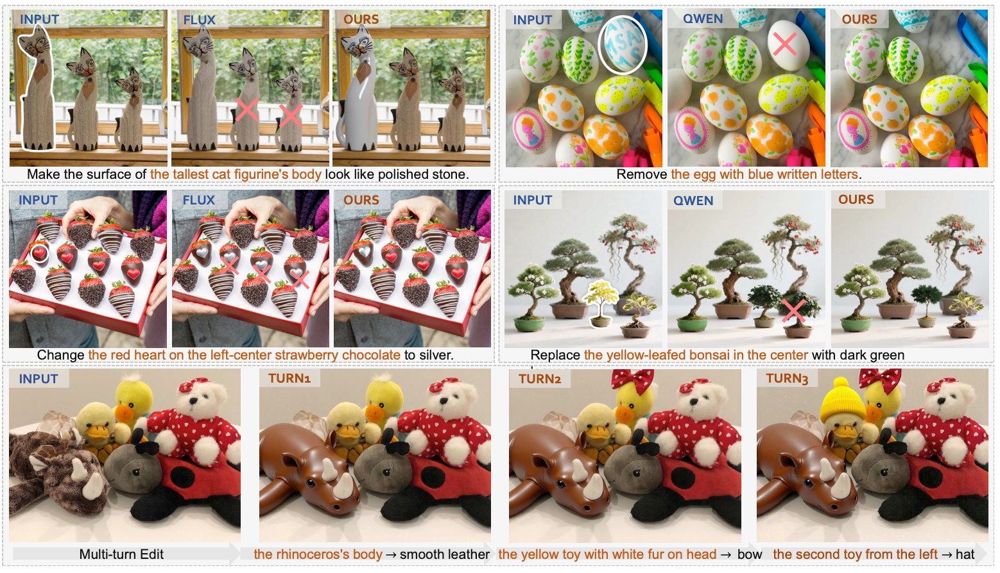
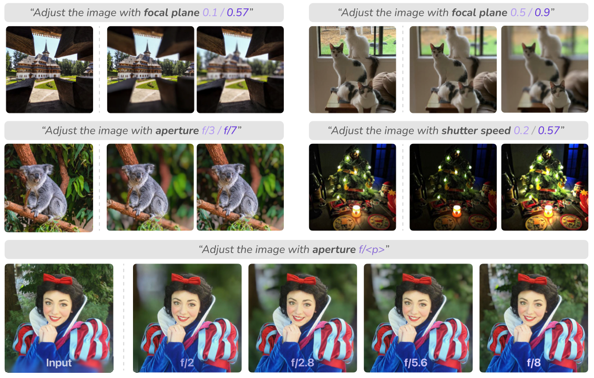
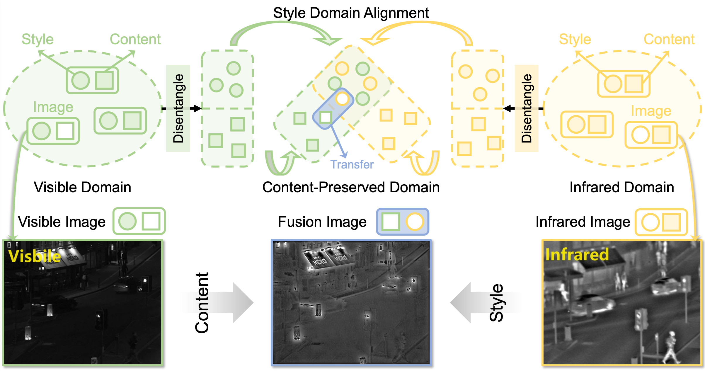
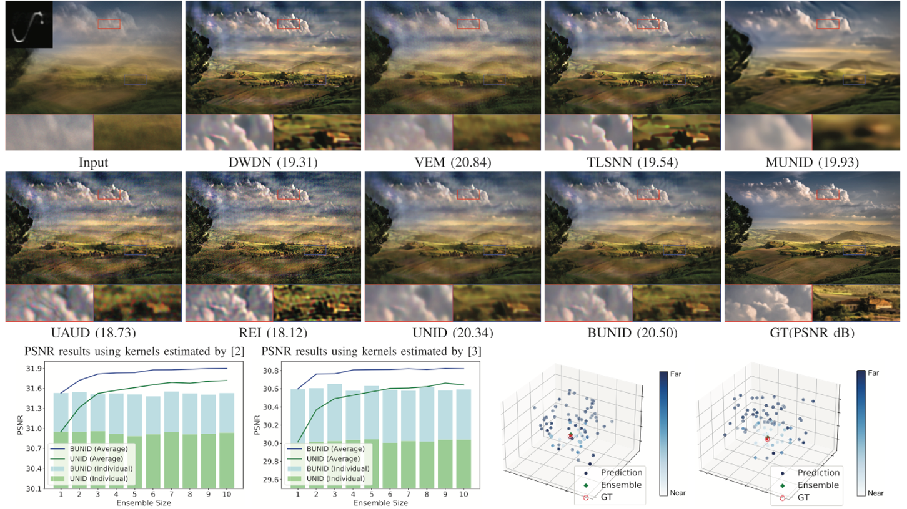
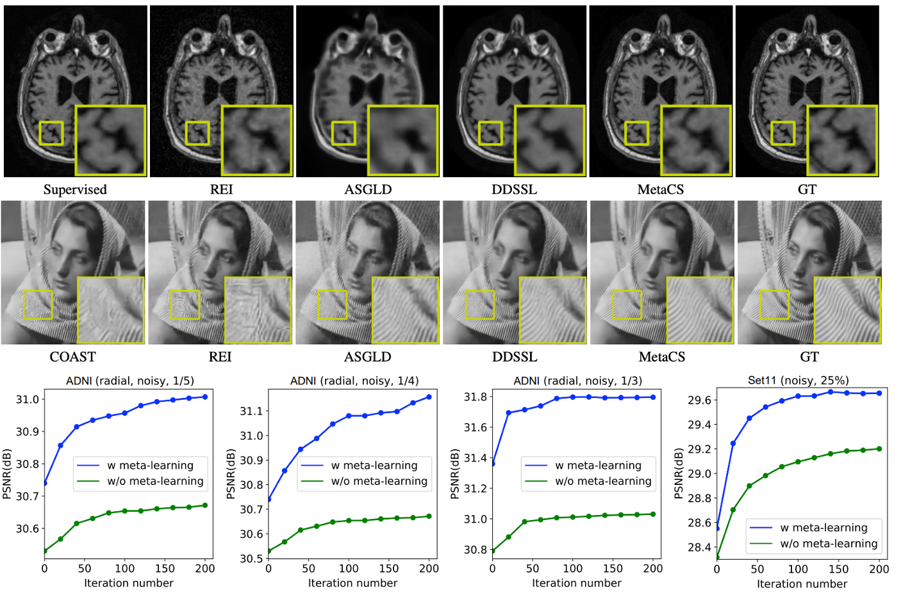
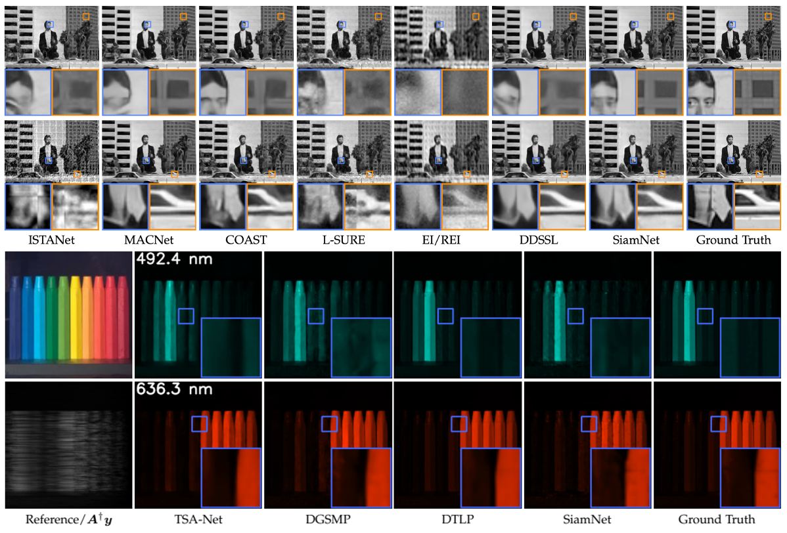

2023 - Present
Sun Yat-sen University, Ph.D. in Cyberspace Security

Ph.D. Candidate, Sun Yat-sen University
I am a Ph.D. candidate at Sun Yat-sen University, advised by Prof. Xiaochun Cao, and will be graduating in July 2027. My research interests include generative models, multimodal understanding and generation, image editing, video editing, and low-level vision.
I am expected to graduate in 2027 and currently on the job market. Please feel free to contact me if interested.
Foundation model training, JoyOmini I2V/V2V, JoyAI-Image-Edit, and e-commerce generation deployment.

General image editing, camera-controllable editing, and smartphone-side algorithm deployment.

Contributor.

Xinran Qin, Zhixin Wang, Fan Li, Jiaqi Xu, Renjing Pei, Xiaochun Cao.

Xinran Qin, Zhixin Wang, Fan Li, Haoyu Chen, Renjing Pei, Wenbo Li, Xiaochun Cao.

Xinran Qin, Yuning Cui, Ruoyu Chen, Shangquan Sun, Wenqi Ren, Alois Knoll, Xiaochun Cao.

Xinran Qin, Yuhui Quan, Zhuojie Chen, Hui Ji.

Xinran Qin*, Yuhui Quan, Tongyao Pang, Hui Ji.

Yuhui Quan, Xinran Qin*, Tongyao Pang, Hui Ji.
Reviewer for ICML, CVPR, ECCV, NeurIPS, ACM MM, AAAI, TPAMI, TIP, and TNNLS.
TPC Member for IEEE WCNCW 2026 WS-09.